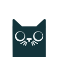

Quiet software,made with care.
A studio of one, making small apps that do one thing well. Free, offline, no clutter. Each one answers when you ask and stays out of the way when you don't.
A quiet tool that answers when you ask, and stays out of the way when you don't.
I'm building a small assistant. Not a platform, not a suite.
Aykiz means moon girl. A small word, almost a whisper. The studio sounds the same way: short sentences, soft verbs, no superlatives. It's named after my daughter, and I mean it that way: warm where it can be, exact where it must be.
One person. Flutter. Offline, free, built in Dhaka.
Six small things,
made with care.
Each runs offline and stays out of your way. Open one and see.

Wasilah
A complete prayer companion: times, qibla, Quran, hadith, and Deen Intelligence for answered questions with references. Sadaqah jāriyah, never monetised.

Drafy
A QR generator that asks for nothing. Eight types, logos, no paywall, no tracking. The free spoiler.

Crisp
Turn photos into a clean PDF, free, on your device. No account, no upload, no watermark. The scanner app is on the way.

Misbah
Light in the dark. A one-touch game where oil is sight. Small, calm, hand-made.

Hirra
A private health record for your cat that notices weight and thirst drift before you can. The care core is free; Plus adds AI vet triage.
Verbatim
Private transcription in your browser. Whisper runs on your device; audio never leaves it. No account, no upload, free.
- apps shipped
- 6
- person, start to ship
- 1
- ads, ever
- 0
- works offline
- ∞
How the studio
actually works.
This is the part that matters. The apps change. The way I make them doesn't. I work alone, ship free, and keep the surface small on purpose.
Offline first
The phone is the computer. Things should work on a train, in a tunnel, on a dead signal. The network is a bonus, never a requirement. If an app stops working when the bars drop, it was never really yours.
One button
If a feature needs a settings page to explain it, it's the wrong feature. I start with the one thing the app is for, make that good, and stop. Most of the work is deciding what to leave out.
Quiet by default
No badges begging for taps, no streaks, no dark patterns. No ads, no tracking, nothing sold on the side. It answers when you ask, and stays quiet the rest of the time. Your attention is not the product.
Finished, then free
I'd rather ship one small thing that's done than five that are almost. When it's done it goes out free, with no paywall waiting later. A few of these are sadaqah, given for their own sake.
- 01One reason. It starts with a single thing a person needs and can't get without paying or being tracked. If I can't say it in a sentence, I don't start.
- 02Smallest honest version. I build the one screen that does the job, on a real phone, offline, before anything else gets added.
- 03Use it daily. I live with it for a while. The parts that annoy me get cut. The parts I reach for get quieter and faster.
- 04Ship, then tend. It goes out free. After that it's care, not features: fix what breaks, leave the rest alone.
I build this way because I have a daughter, and most of what I make is named after her. I wouldn't hand her an app that nags, leaks, or hides a feature behind a price. So I don't ship one.
Start with one.
Most are free.
Six small apps, mostly free and offline. Open the one that fits, and see if it stays out of your way.
See the appsQuestions, or just want to say hello? hello@aykizintelligence.com
Or press / anywhere. Quiet software answers when you ask.